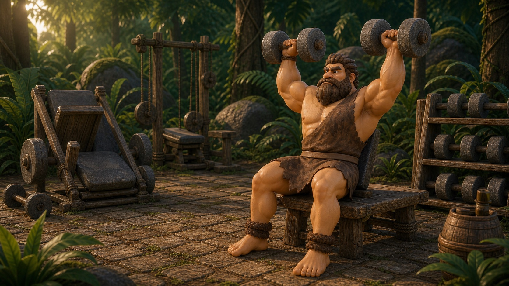
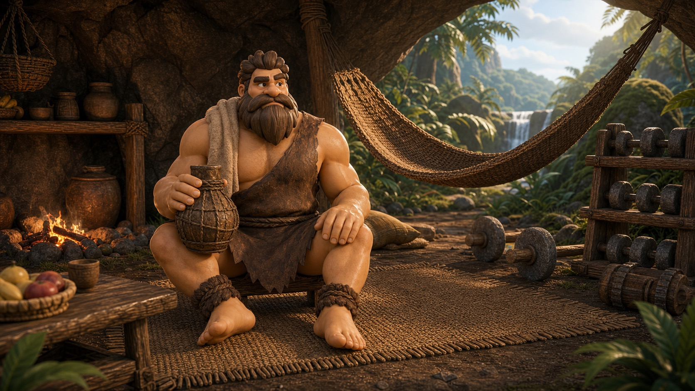

Should You Train When You're Sore? Beginner Recovery Rules
Soreness is feedback, not a scoreboard. Here is how to read it without losing momentum.
Best forNew liftersRuleWarm up before decidingRed flagsSharp pain or altered movement
A gentle warm-up tells you more than arguing with soreness from the couch.
Beginners often treat soreness like proof that a workout worked. It is not that simple. Soreness can show that a stimulus was new, but it does not mean the session was better.
The right question is: can you move well after warming up? If yes, train intelligently. If no, reduce the load, swap the muscle group, or rest.
Mild sorenessWarm up and train lighter if movement improves.
Severe sorenessRest or deload.
PainDo not train through sharp or unusual pain.
Soreness vs Pain
Dull muscle tenderness that improves as you warm up is usually manageable. Sharp pain, joint pain, swelling, limping, or a movement that gets worse deserves caution and possibly medical guidance.
Use the Warm-Up Test
Spend five to ten minutes moving gently. If range of motion improves and your form feels normal, you can often train. If movement stays ugly, change the plan.
Soreness rules
Recovery Decision Cards
Test
Mild Soreness Warm-Up
Use easy movement to see whether soreness improves before you decide.
5-10 minutes
Technique
Form Check
Light sets reveal whether soreness is changing your positions.
First warm-up sets
Recovery
Active Recovery Walk
Easy walking can reduce stiffness and keep the habit alive on sore days.
10-30 minutes

Adjustment
Swap Muscle Group
If legs are wrecked, an upper-body day may be smarter than skipping everything.
Same day option
Lower stress
Deload Session
A lighter session keeps technique fresh while giving recovery room.
50-70% normal work

Full recovery
Rest Day
Rest is the right call when soreness is severe or movement quality is poor.
24-48 hours
Pick the Recovery Choice That Fits
Mild Soreness Warm-Up5-10 minutes
Form CheckFirst warm-up sets
Active Recovery Walk10-30 minutes
Swap Muscle GroupSame day option
Deload Session50-70% normal work
Rest Day24-48 hours
Recover Without Losing the Thread
Torq Tribe can keep your plan moving while adjusting volume and effort around recovery.